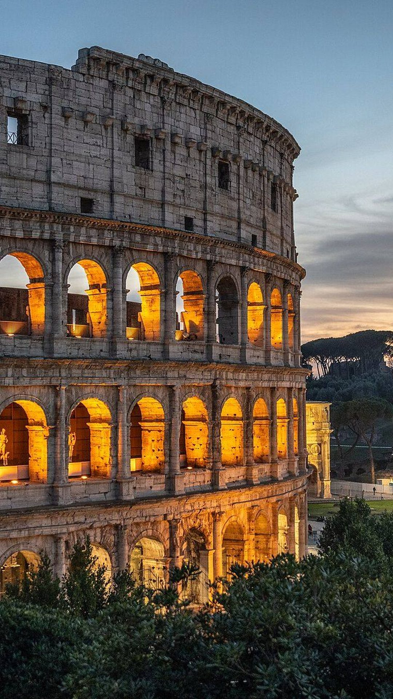
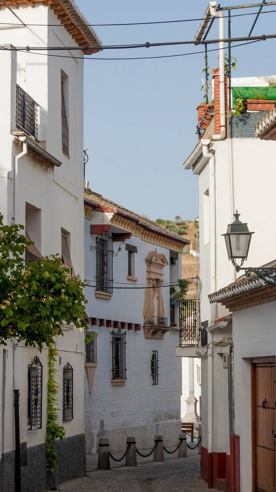
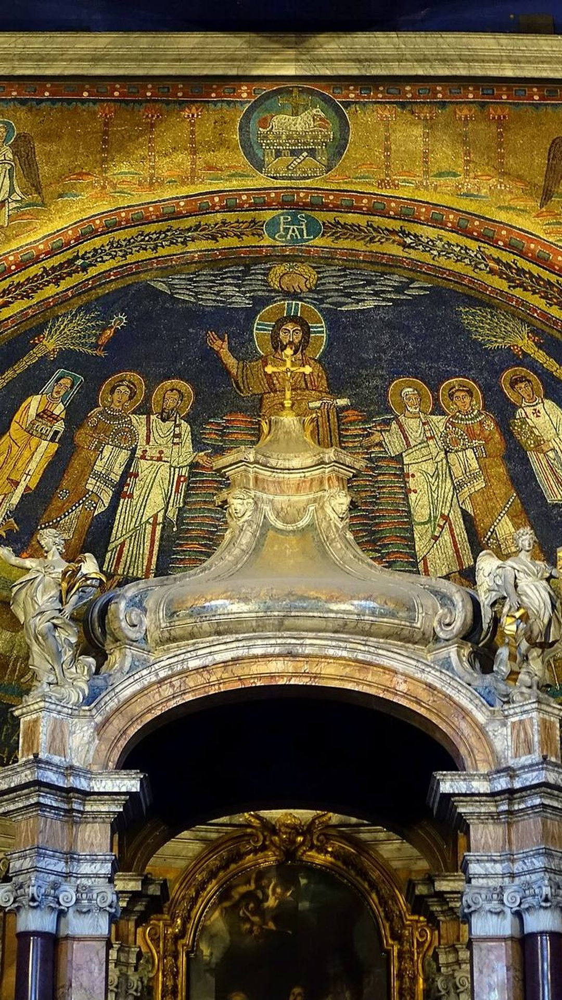
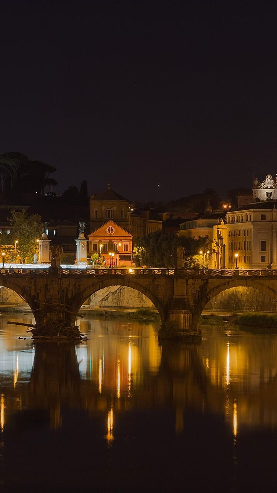

1 · El plan
Dices dónde y cuándo.Te escribe los días.
2 · El tour a pie
Una voz te llevade parada en parada.
3 · El museo
Enfocas un cuadroy te cuenta su historia.
Todavía no está publicada
Llega en octubre.
2,99 € el viaje entero. En la lista, el primero por 1,99 €. travelsnomad.com
travelsnomad.com
9:41